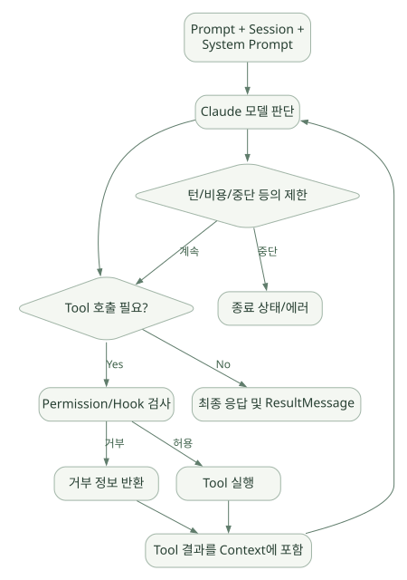

핵심 원리 / 단원 02
프로세스 통신과 실행 결과 연결하기
query와 ClaudeSDKClient, 메시지 스트림과 종료 상태
먼저 연결해 보기
단발 query와 양방향 ClaudeSDKClient는 입력·제어·연결 수명주기가 다릅니다. 출력 스트림이 있다는 사실만으로 같은 연결에서 지속적인 중단·승인 제어가 가능한 것은 아닙니다.
AssistantMessage와 ResultMessage, 중간 이벤트와 최종 성공을 구분하세요. 실행 Loop는 CLI의 기능이며 Python SDK에 모든 도구 선택 로직이 들어 있다고 해석하면 안 됩니다. 턴·비용·오류·중단 조건을 결과 메시지와 연결해 읽으세요.
읽는 관점ResultMessage 수신 여부와 성공 여부, 클라이언트 연결 수명과 Session 수명을 따로 확인하세요.
5. 전체 아키텍처와 실행 주체#
5.1 주요 컴포넌트#
| 컴포넌트 | 주된 역할 | 주요 코드/출처 |
|---|---|---|
query() |
단발 실행/단방향 스트림 인터페이스 | query.py [C01] |
ClaudeSDKClient |
양방향 대화, 연속 질의, interrupt, 연결 관리 | client.py [C02] |
ClaudeAgentOptions |
Model, Tools, Permissions, Hooks, Session 등 설정 | types.py [C06] |
InternalClient |
단발 쿼리 실행 연결·정리 | _internal/client.py [C03] |
SubprocessCLITransport |
CLI 바이너리 실행, 인자 구성, stdin/stdout 통신 | _internal/transport/subprocess_cli.py [C05] |
Query |
제어 요청·응답, Hook/Permission 호출, 메시지 스트림 | _internal/query.py [C04] |
parse_message() |
CLI 원시 메시지를 SDK 메시지 타입으로 변환 | _internal/message_parser.py [C07] |
| Claude Code CLI | Agent Loop, Built-in Tool, 모델/컨텍스트 실행 | [D02]—코드 공개 범위 제한 |
SessionStore |
세션 기록 외부 저장 및 재개 | [D09], [C08] |
5.2 데이터 흐름#
| 순서 | 호출자 → 수신자 | 전달 내용 |
|---|---|---|
| 1 | Python Application → Agent SDK | query(prompt, options) |
| 2 | Agent SDK → Subprocess Transport | 설정 및 스트림 초기화 |
| 3 | Subprocess Transport → Claude Code CLI | 프로세스 실행 + 메시지 |
| 4 | Claude Code CLI → Claude Model | Prompt/Context/Tool Definition |
| 5 | Claude Model → Claude Code CLI | text/tool_use |
| 조건 분기：Tool 요청 | ||
| 6 | Claude Code CLI → Claude Code CLI | Hook·Permission 평가 |
| 7 | Claude Code CLI → Tool/MCP | Tool 실행 |
| 8 | Tool/MCP → Claude Code CLI | Tool 결과 |
| 9 | Claude Code CLI → Claude Model | Tool 결과 포함 재호출 |
| ↳ 다른 분기：최종 응답 | ||
| 10 | Claude Code CLI → Subprocess Transport | result |
| 구간 종료 | ||
| 11 | Subprocess Transport → Agent SDK | stream-json / control |
| 12 | Agent SDK → Python Application | Typed Message / ResultMessage |
원문에 수록된 학습용 도식입니다. 호출 순서와 반복·분기 조건을 표 형태의 순서도로 보존했습니다. 세부 조건과 예시·구현의 구분은 앞뒤 본문을 함께 읽으세요.
도식 원문 보기 (Mermaid)
sequenceDiagram
participant App as Python Application
participant SDK as Agent SDK
participant T as Subprocess Transport
participant CLI as Claude Code CLI
participant M as Claude Model
participant Tool as Tool/MCP
App->>SDK: query(prompt, options)
SDK->>T: 설정 및 스트림 초기화
T->>CLI: 프로세스 실행 + 메시지
CLI->>M: Prompt/Context/Tool Definition
M-->>CLI: text/tool_use
alt Tool 요청
CLI->>CLI: Hook·Permission 평가
CLI->>Tool: Tool 실행
Tool-->>CLI: Tool 결과
CLI->>M: Tool 결과 포함 재호출
else 최종 응답
CLI-->>T: result
end
T-->>SDK: stream-json / control
SDK-->>App: Typed Message / ResultMessage[의사도식] CLI 내부 세부 함수 호출 순서를 가리키는 코드 레벨 구현도는 아니다. 통신 경계와 책임을 이해하기 위한 시퀀스다. [D02], [C03]–[C07]
5.3 ‘프로세스가 생긴다’는 것의 의미#
Python 패키지가 단지 requests.post()만 실행하는 것과 다르게, 기본 Transport는 별도 실행 바이너리와 JSON 기반 스트림을 주고받는다. 따라서 프로세스 생명주기, 배포 이미지 구성, 환경변수 전달, 파일시스템 격리, OS 사용자 권한, 세션 스토리지, CLI 업데이트가 운영 요소가 된다. [C05], [D19]
6. query() vs ClaudeSDKClient#
| 항목 | query() |
ClaudeSDKClient |
|---|---|---|
| 기본 성격 | 단발·단방향 사용 | 양방향 지속 세션 |
| 입력 | 호출 시 prompt/입력 스트림 제공 | 연결 후 client.query() 반복 |
| 출력 | async for로 메시지 스트림 |
receive_messages() / receive_response() |
| 중단 | 직접적 interactive interruption 제한 | interrupt() 지원 |
| 동적 제어 | 초기 옵션 기반 | 실행 중 model·permission 조정 등 |
| 일반적 용도 | 작업 1회 수행, 배치 | 상담형 UI, 반복 분석, 승인 인터랙션 |
6.1 상태 유지와 query()의 오해#
‘query()가 stateless’라는 문구는 같은 Python 클라이언트 연결 상태를 유지하지 않는다는 뜻에 가깝다. 기존 Session ID와 resume 옵션을 통해 이전 세션을 재개할 수 있다는 사실과 모순되지 않는다. SDK 호출 객체의 수명과 대화 기록의 수명을 분리해서 생각해야 한다. [D08]
6.2 연속 대화 예시#
import asyncio
from claude_agent_sdk import ClaudeSDKClient, ClaudeAgentOptions, ResultMessage
async def main():
options = ClaudeAgentOptions(cwd="/path/to/project", max_turns=8)
async with ClaudeSDKClient(options=options) as client:
await client.query("CSV 파일의 열 이름을 요약해 줘")
async for msg in client.receive_response():
if isinstance(msg, ResultMessage):
print(msg.result)
await client.query("이 중 결측치가 발생할 가능성이 높은 열은?")
async for msg in client.receive_response():
if isinstance(msg, ResultMessage):
print(msg.result)
asyncio.run(main())receive_response()는 ResultMessage까지 수신한 뒤 멈추는 편의 인터페이스이고, receive_messages()는 전체 메시지를 계속 읽는 스트림이다. [C02]
7. 메시지·스트리밍·최종 결과·비용#
7.1 메시지 유형을 구분해야 하는 이유#
Agent의 출력을 단순히 최종 문자열 하나로 취급하면 어떤 도구를 호출했는지, 도구 실행이 실패했는지, 권한 거부가 있었는지를 잃어버릴 수 있다.
| 메시지 | 대표 내용 | 분석 활용 |
|---|---|---|
SystemMessage |
초기화·세션·사용 가능 도구 등 정보 | 구동/설정 검사 |
AssistantMessage |
텍스트 및 Tool 사용 요청 블록 | 모델 판단 경로 추적 |
UserMessage |
사용자 입력 또는 Tool 결과 표현 | 근거 추적 |
StreamEvent |
세밀한 부분 토큰/이벤트 | 실시간 UI |
ResultMessage |
최종 상태·비용·사용량·세션 ID 등 | 종료·과금·실패 검사 |
실제 버전에 따라 다른 메시지 유형도 존재한다. 운영 코드에서는 알려진 유형만 무조건 허용하거나 모든 결과를 AssistantMessage라고 가정하지 말고 API Reference와 Message Parser를 확인한다. [D03], [C07]
7.2 최종 결과의 중요한 필드#
ResultMessage에는 subtype, is_error, num_turns, duration_ms, session_id, result, structured_output, total_cost_usd, usage, permission_denials 등이 포함될 수 있다. 필드는 결과 subtype 및 버전에 따라 None일 수 있다. [D03]
실무 체크: ResultMessage를 받았다고 해서 성공을 단정하지 말고 subtype, is_error, 예외, 구조화 출력 존재 여부를 확인한다. 최소한 성공/예산 초과/최대 턴/실행 오류를 구분해 저장한다.
7.3 스트리밍#
include_partial_messages등 관련 옵션으로 세밀한 출력 이벤트를 받을 수 있다. [D17]- 각
AssistantMessage는 ‘완료된 전체 실행’과 같지 않다. - streaming 도중 연결 실패, 중복 이벤트, partial 출력 노출에 주의한다.
- 민감 데이터를 실시간 UI/로그로 그대로 전달하지 않도록 서버 측 필터가 필요하다. [설계]
8. Agent Loop와 종료 조건#
8.1 실행 원리#
넓은 도식은 가로로 이동하며 읽을 수 있습니다. 도식 크게 보기 ↗

원문에 수록된 학습용 도식입니다. 노드·화살표·분기 라벨을 보존해 다시 배치했습니다. 세부 조건과 예시·구현의 구분은 앞뒤 본문을 함께 읽으세요.
도식 원문 보기 (Mermaid)
flowchart TD
U[Prompt + Session + System Prompt] --> L[Claude 모델 판단]
L --> D{Tool 호출 필요?}
D -->|Yes| P[Permission/Hook 검사]
P -->|거부| E[거부 정보 반환]
P -->|허용| T[Tool 실행]
T --> R[Tool 결과를 Context에 포함]
E --> R
R --> L
D -->|No| F[최종 응답 및 ResultMessage]
L --> Z{턴/비용/중단 등의 제한}
Z -->|중단| X[종료 상태/에러]
Z -->|계속| D공식: [D02] 이 플로우는 설명용 요약이다. CLI 내부 상태 머신의 정확한 구현 함수나 코드 분기를 나타내지는 않는다.
8.2 모델 Tool Use와 ‘실제 Tool 실행’ 구분#
- 모델은 도구를 사용해 달라는 요청을 생성한다.
- 런타임/정책 계층은 요청의 허용 여부, 실행 위치와 방식, 오류 처리를 결정한다.
- 도구 결과는 다음 모델 호출에 반영된다.
- 최종 답변은 실행 횟수·비용·사용 가능한 데이터 품질에 영향을 받는다.
8.3 종료와 상한 설정#
- 최종 답변/정상 종료.
max_turns에 의한 턴 수 제한.max_budget_usd에 의한 예산 제한.- Tool 오류·모델 API 오류·CLI 연결 오류.
- 승인이 거부되거나
interrupt()로 중단. - Structured Output 재시도 실패.
반환된 ResultMessage.subtype은 success, error_max_turns, error_max_budget_usd, error_during_execution, error_max_structured_output_retries 등의 값을 가질 수 있다. [D03]
8.4 ‘턴’과 ‘사용자 요청’을 혼동하지 말 것#
사용자 질문 한 번으로 여러 모델·도구 상호작용이 발생할 수 있다. 비용·시간·컨텍스트를 평가할 때 num_turns와 실제 API 호출/도구 호출 수를 분리하여 수집하는 편이 좋다. 정확한 과금 및 턴 정의는 해당 API Reference를 따른다.
8.5 Claude Agent SDK의 강점과 트레이드오프#
장점: 도구 호출과 루프를 처음부터 직접 개발할 부담이 작다.
트레이드오프: CLI 내부의 모든 분기 알고리즘을 Python 사용자 코드에서 독립적으로 교체하기는 어렵다. 엄격한 프로세스 제어나 명시적 DAG가 중심인 업무는 상위 서비스의 워크플로 계층을 별도 설계해야 할 수 있다. [추론·설계]